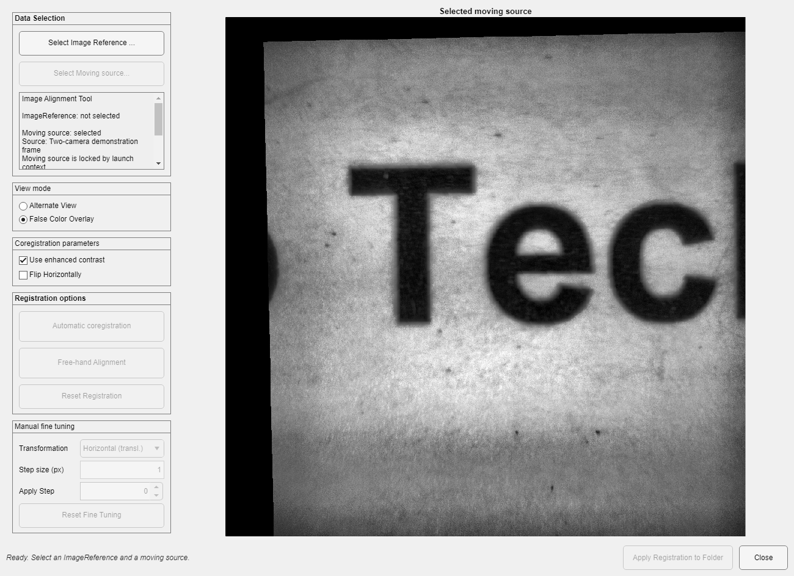

Image Alignment Tool estimates and reviews a 2-D transform from the current moving image to a subject image reference, then optionally applies that transform to the entire Save Folder.
Load .dat or image-kind .umt data and choose Utilities > Alignment Tool. A writable project/session binding is required. DataViewer passes the current frame as a locked moving source, source description, target Save Folder, and project/subject/session identifiers.

| Control | Meaning |
|---|---|
| Select Image Reference | Opens Image Reference Manager in selection mode and loads the fixed image. |
| Select Moving source | Chooses another supported image when launched standalone; locked when DataViewer supplied the source. |
| Alternate View / False Color Overlay | Changes comparison display only. |
| Use enhanced contrast / Flip Horizontally | Controls registration preparation and orientation. |
| Automatic registration | Estimates a similarity transform and previews the candidate. |
| Free-hand Alignment / Confirm | Adjusts a box interactively, then converts its geometry to a transform. |
| Transformation, Step size, Apply Step | Fine-tunes horizontal/vertical translation, rotation, or scale. |
| Reset Fine Tuning / Reset Registration | Removes manual adjustments or the full candidate. |
| Apply Registration to Folder | Registers the transform as a session-managed resource, records the local applied resource UUID and QC state, and rewrites target data after confirmation. |
Destructive and effectively irreversible
Applying registration rewrites every .dat file in the target folder. Interpolation and out-of-frame loss cannot be reliably undone. Back up the Save Folder, review the impact summary and ROI warning, and confirm only once.
The impact dialog reports loaded ROI risk. After a successful apply, DataViewer reloads the most suitable current file, refreshes project state, and clears loaded ROIs because their coordinates may be stale. Save or export important ROI definitions before alignment and transform/recreate them afterward.
Closing with an unsaved candidate asks for confirmation. Preview, view mode, and fine-tuning are temporary until apply.